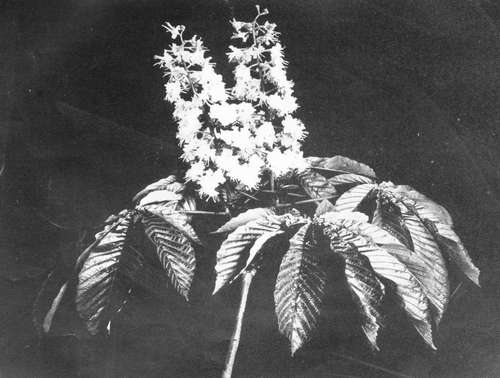
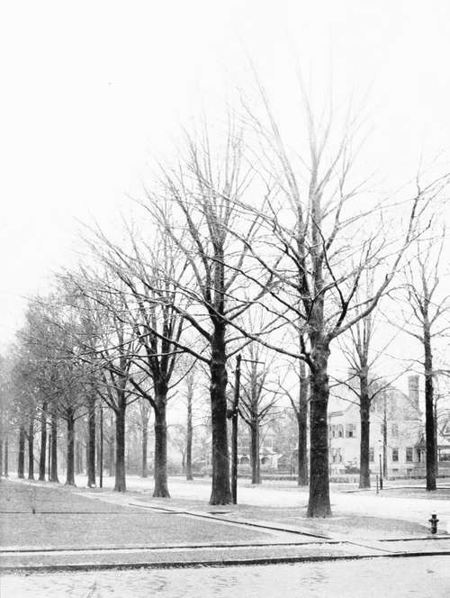

Selection Of Spectes. Part 2
Description
This section is from the book "Tree Planting Streets And Highways", by William F. Fox. Also available from Amazon: Tree planting on streets and highways.
Selection Of Spectes. Part 2
The Sweet Gum, or Liquidambar, so named from the fragrant balsam which exudes when the trunk is wounded, is an ornamental tree of about eighty feet in height and two feet in diameter, attaining in some localities a much greater size. It is a rapid grower and thrives on almost any soil. Its glossy, star-shaped leaf makes it a favorite with all students of leaf forms. The tree is interesting in winter also on account of the corky ridges or wings attached to the twigs and smaller branches which give it a peculiar appearance. In autumn its foliage changes to a deep crimson interspersed with yellow. Where a variety of species may he deemed desirable, this tree should not he omitted, as it can be used in street planting for several block's with good effect.
*Meehan's Monthly. Philadelphia, Pa., May, 1902.
Memorials of fohn Bartram and Humphrey Marshall. William Darlington, M. D., LL. D. Philadelphia: Lindsay & Blakiston. 1849.
Gen. James S. llrisbin, L". S. A. Trees and Tree Planting. New York: Harper & Brothers. 1888.
Trees Have Flowers Also.
The Oaks Of Flushing. Pin Oaks.
Of the various species of Ash, the White Ash is the one best adapted for ornament and shade. It may be classed fairly among the large trees, the trunk attaining considerable height before it subdivides, which, like the Elm, makes it desirable for street purposes. Its foliage is pleasing in appearance, growing in irregular, waving masses, but without any abrupt or broken outlines. The Ash, however, is among the last to put out its leaves in spring, and among the first to lose them in the fall. In the latter season its foliage assumes a variety of colors, violet, brown, and dark chocolate. Wilson Flagg notes that the Ash is the only tree that shows a clear brown as one of its regular series of tints in the living leal. Like most trees with compound leaves it sheds its spray with the leaves in fall, leaving naked angular branches that detract from the beauty of its habit in winter. Its freedom from disease and insects commends it to all tree planters.
In street planting the Oaks have hitherto been used but sparingly. The few that appear here and there along country roads seem to owe their existence to accident rather than design. This is probably due to their slower growth, a disadvantage which is fully offset by their hardiness and longer life. The Oak is a noble tree, its size and sturdy character entitling it to a prominent place in our streets and parks. In growth it is no slower than some other species which have been freely planted. The village of Flushing, L. L, is noted for the beautiful Oaks that shade some of its streets.
The Scarlet Oak is a desirable tree for many reasons, one of them being the crimson leaves which charm the eye long after the other trees are bare. Its foliage is unusually persistent, and in some seasons the ruddy glow <>t its leaves may be seen in brilliant contrast with the first snow.
The Red Oak is the most rapid in growth of all the Oaks, attains a great size, and exhibits the best proportions of any of the acorn-bearing species. It has less of the gnarled and contorted habit so characteristic of the Oaks in general.
Idle Tin Oak may be described as a middle-sized tree, available for roads and streets of medium width. In thrives best on moist ground. In shapely habit and general massing of foliage it will compare favorably with any of its genus, while the smooth, deeply pinnatifid leaves, bright green on both sides, add greatly to its beauty. The lowest branches of the Pin Oak are generally the longest, a peculiarity that distinguishes it from most of the deciduous trees, and which emphasizes its beautiful proportions, giving it a conical outline. Like all the Oaks its leaves are among the last to fall, and, without displaying brilliant colors, they contribute materially to the variety of autumnal tints. Its immunity from insects, fairly rapid growth, and the satisfactory results that have hitherto attended its use, make it a desirable tree. The famous Oaks that beautify the streets of Flushing include a large number of this species.
The White Oak is superior in vigor and longevity. It does not grow as tall as the Red Oak, but attains a greater spread. Its red and russet-colored leaves are very persistent, often clinging to the tree dining the entire winter, a feature regarded by many with unfailing interest. It is to be hoped that, with the revival of tree planting in our towns and villages, the Oaks will receive the consideration which their many good qualities deserve.
The Honey Locust is the latest of our trees to put forth its foliage. This is the only thing that can be said against it, and that is not always a disadvantage. When its pinnate leaves do appear the beaut)- of their waving, feathery spray fully excuses any complaint of tardiness. It is a tall, graceful tree, free from insects thus far, unaffected by smoke or dust, and well entitled to a place along our streets and in our parks. Where a dense, cool shade is wanted the Honey Locust would not answer the purpose, owing to its open foliage through which the sunlight streams freely; but this peculiarity makes it desirable for lawns or places where plants or grass might suffer from too much shade. A distinctive feature may be observed in the sharp, stout thorns, three to five inches long, often three-forked or growing in clusters on the trunk. The tree takes its common name from the sweet contents of the long, purple bean pods that hang conspicuously on the branches after the leaves have fallen.
Continue to: